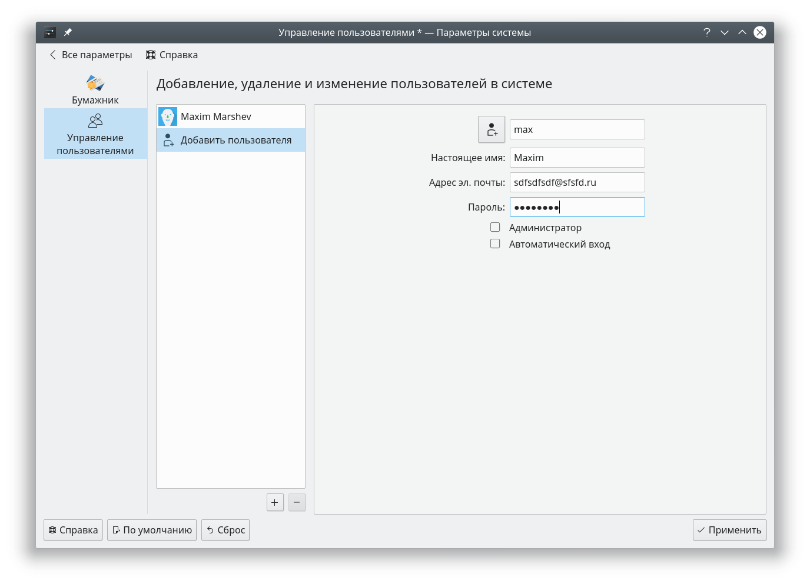

|
Вы попали на сайт Маршева Максима Сергеевича Студент 3 курса МОАИС-15/1 Почта для связи со мной darkcacok1@gmail.com |
| Полезные ссылки | Лабы по курсу "Администрирование ИС" |
|---|---|
|
Лаба №1 Создание пользователя для себя, любимого Задание:
1. Заходим в настройки => Учетная запись => Управление пользователями => Добавить пользователя => Вводим все данные нажимаем применить. 
2.Открываем терминал вводим:
|